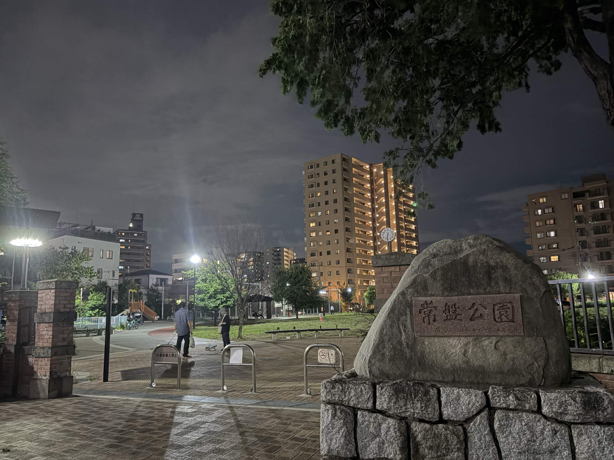
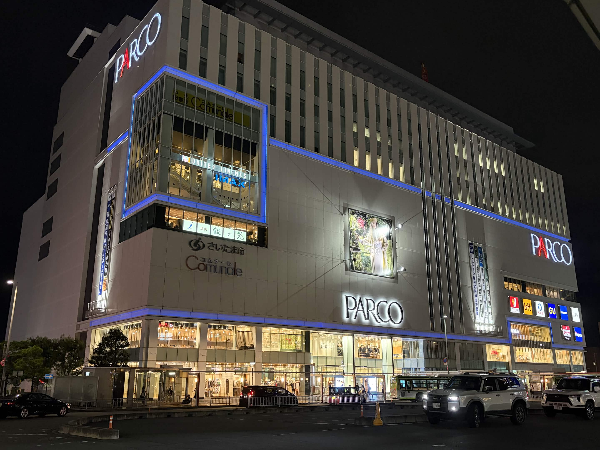
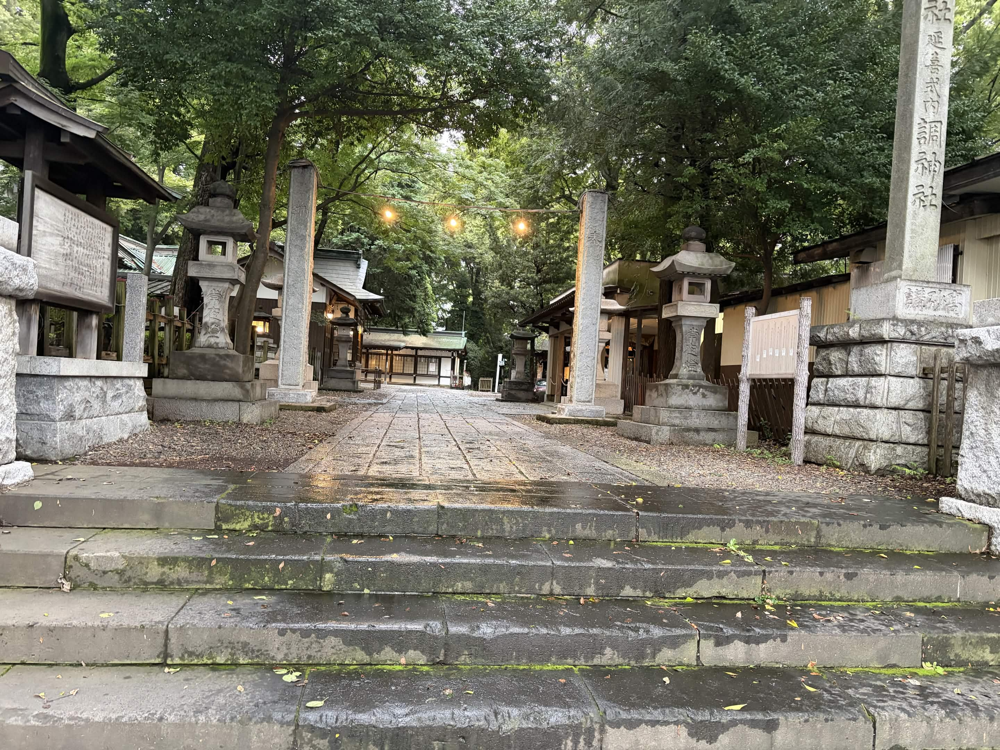
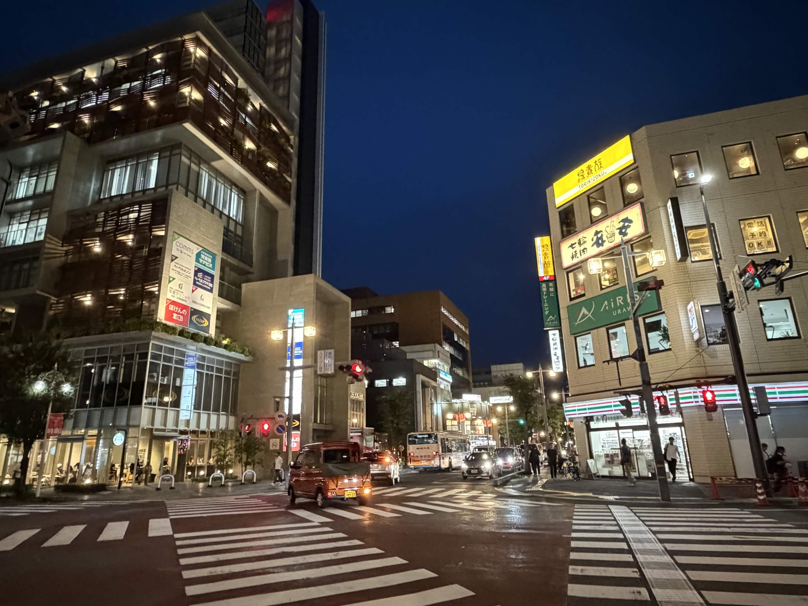
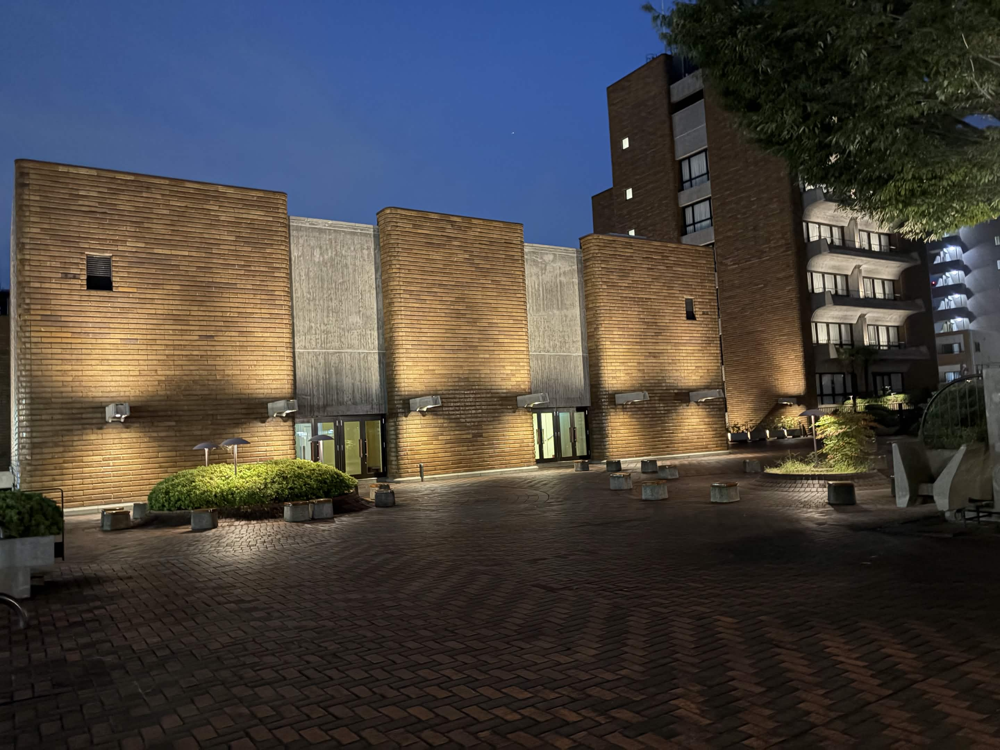
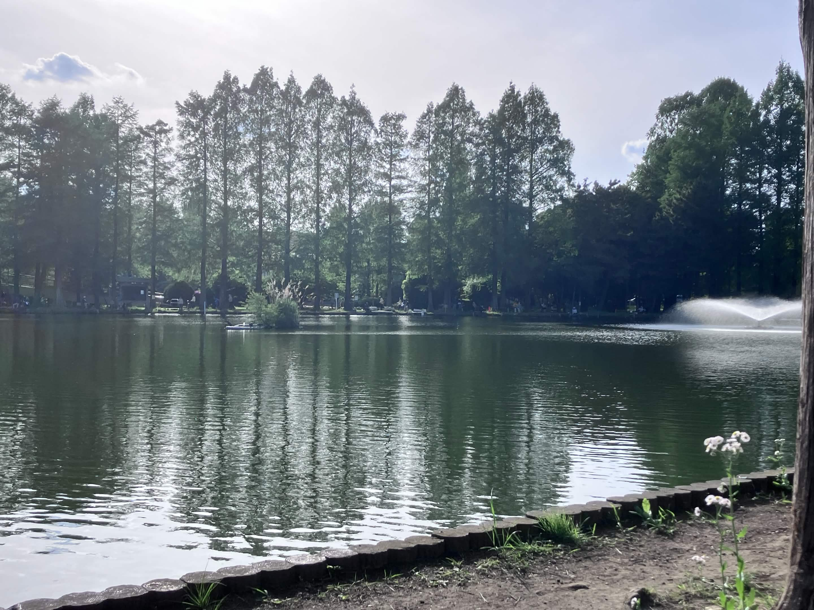

公園、参道、商店街 — 歴史と暮らしが重なり合う浦和の街を、自分の足でゆったり歩いてみませんか。

浦和のまちなかに広がる緑豊かな公園。四季の花や木があり、地元の人々が散歩や休憩に訪れます。

浦和駅前に大きな複合商業施設。映画館やファッション、雑貨まで揃うショップが入っていて、夜遅くまで人通りが絶えません。

浦和駅から続く歴史ある参道。歩いていると、うさぎが出迎える神社の境内にたどり着きます。

老舗の飲食店や個性的な専門店が並ぶ商店街。レッズカラーの装飾を見つけながら散策するのも浦和らしい楽しみ方です。

コンサートや催し物が行われるホールを備えた文化施設。落ち着いたおしゃれなレンガ調の外観で、周辺には木々も多く残っています。

大きな沼が特徴的な公園で、水辺の風景とジョギングコースが人気。詩人である立原道造ゆかりの地としても知られます。(現在の行政区分では南区ですが、旧浦和市エリアとして親しまれています)
駅から参道を歩き、うさぎが特徴的な調神社へお参りします。社殿の前でひと息つきましょう。
緑あふれる公園を散策します。すぐそばには、旧県庁所在地だった頃の名残も見られます。
江戸時代から続くうなぎ文化を、老舗の蒲焼でじっくり味わいましょう。
個性豊かな専門店をのぞきながら、浦和みやげを探すのもおすすめです。
試合のチケットを持っていれば、そのまま美園駅まで電車で行き埼玉スタジアムへ足を延ばして観戦するのも良いでしょう。
浦和駅までの行き方や、埼玉スタジアムへのアクセスをまとめています。